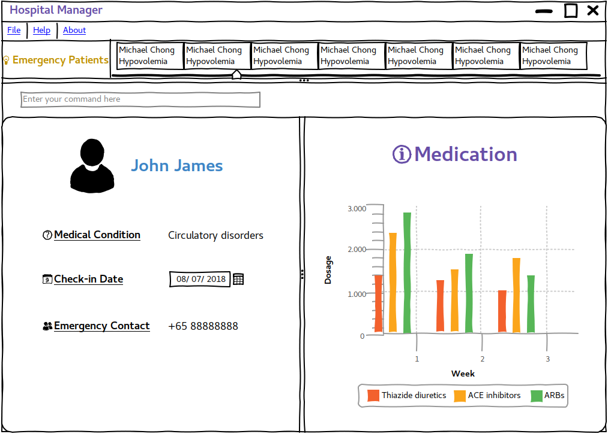

By: Team W14-3 Since: September 2018 Licence: MIT
- 1. Introduction
- 2. Quick Start
- 3. Features
- 3.1. Viewing help :
help - 3.2. Checking in a patient:
checkin - 3.3. Checking out a patient:
checkout - 3.4. View patient queue:
viewqueue - 3.5. View patient’s medical history:
viewmh - 3.6. Add to patient’s medical history:
addmh - 3.7. View patient’s dietary needs:
viewdiet - 3.8. Add patient’s dietary needs:
adddiet - 3.9. View patient’s medication: UI functionality
- 3.10. Add patient medication:
addmeds - 3.11. Sign in patient’s visitors:
visitorin - 3.12. Sign out patient’s visitors:
visitorout - 3.13. View patient’s visitors:
viewvisitors - 3.14. Saving the data
- 3.15. Encrypting data files
[coming in v2.0]
- 3.1. Viewing help :
- 4. FAQ
- 5. Command Summary
1. Introduction
Hospital Management System 2K18 is for hospital administrators, doctors, nurses, and pharmacists who prefer to use a desktop app to manage patients and their associated data.
More importantly, Hospital Management System 2K18 is optimized for those who prefer to work with a Command Line Interface (CLI) while still having the benefits of a Graphical User Interface (GUI).
If you can type fast, Hospital Management System 2K18 can get your hospital management tasks doen faster than traditional GUI apps.
Interested? Jump to the Section 2, “Quick Start” to get started. Enjoy!
2. Quick Start
-
Ensure you have Java version
9or later installed in your Computer. -
Download the latest
hm2k18.jarhere. -
Copy the file to the folder you want to use as the home folder for your Hospital Management System 2K18.
-
Double-click the file to start the app. The GUI should appear in a few seconds.
 -
Type the command in the command box and press Enter to execute it.
e.g. typinghelpand pressing Enter will open the help window. -
Some example commands you can try:
-
exit: exits the app
-
-
Refer to Section 3, “Features” for details of each command.
3. Features
Command Format
-
Words in
UPPER_CASEare the parameters to be supplied by the user e.g. inadd n/NAME,NAMEis a parameter which can be used asadd n/John Doe. -
Items in square brackets are optional e.g
n/NAME [t/TAG]can be used asn/John Doe t/friendor asn/John Doe. -
Items with
… after them can be used multiple times including zero times e.g.[t/TAG]…can be used ast/friend,t/friend t/familyetc. -
Parameters can be in any order e.g. if the command specifies
n/NAME p/PHONE_NUMBER,p/PHONE_NUMBER n/NAMEis also acceptable.
3.1. Viewing help : help
Format: help
3.2. Checking in a patient: checkin
Adds a person to the patient queue.
Format: checkin NRIC
-
If the patient is a new patient, then the AddressBook will request for additional information in the following format:
n/NAME p/PHONE_NUMBER a/ADDRESS d/DRUG_ALLERGIES
Examples:
-
checkin S1234567A-
n/Ling Zhi Yu p/91234567 a/6 College Avenue East, #00-00, University Town, National University of Singapore, 138614 d/nil
-
3.3. Checking out a patient: checkout
Remove a patient from the patient queue after this patient checks out of the hospital.
Format: checkout NRIC
Examples:
-
checkout S1234567A
3.4. View patient queue: viewqueue
View the current patient queue.
Format: viewqueue
Examples:
-
viewqueue
3.5. View patient’s medical history: viewmh
View a patient’s medical history.
Format: viewmh ic/NRIC
Examples:
-
viewmh ic/S1234567A
3.6. Add to patient’s medical history: addmh
Add a diagnosis entry to a patient’s medical history.
Format: addmh ic/NRIC mh/diagnosis
Examples:
-
addmh ic/S1234567A mh/ Saw a patient today for flu. Prescribed 2 weeks of panadol, advised patient to rest and rehydrate.
3.7. View patient’s dietary needs: viewdiet
View a patient’s dietary needs.
Format: viewdiet NRIC
Examples:
-
viewdiet S1234567A
3.8. Add patient’s dietary needs: adddiet
View a patient’s dietary needs.
Format: adddiet NRIC
Examples:
-
adddiet S1234567A-
d/halal d/kosher d/babyfood
-
3.9. View patient’s medication: UI functionality
View a patient’s medication history.
Simply click on the person’s card and the panel on the right will display his prescribed medication.
3.10. Add patient medication: addmeds
Add to a patient’s medication history.
Format: addmeds ic/NRIC d/DRUG_NAME q/QUANTITY_PER_DOSE u/DOSAGE_UNIT n/DOSES_PER_DAY t/DURATION_IN_DAYS
Examples:
-
addmeds ic/S1234567A d/Paracetamol q/2 u/tablets n/4 t/14
3.11. Sign in patient’s visitors: visitorin
Signs in a visitor for a patient.
Format: visitorin p/PATIENT_NAME v/VISITOR_NAME
Examples:
-
visitorin p/Ling Zhiyu v/Sara Ann Nicholas
3.12. Sign out patient’s visitors: visitorout
Signs out a visitor for a patient.
Format: visitorout p/PATIENT_NAME v/VISITOR_NAME
Examples:
-
visitorout p/Ling Zhi Yu v/Sara Ann Nicholas
3.13. View patient’s visitors: viewvisitors
Views a patient’s visitors.
Format: viewvisitors p/PATIENT_NAME
Examples:
-
visitorout p/Ling Zhi Yu
3.14. Saving the data
Patient data are saved in the hard disk automatically after any command that changes the data.
There is no need to save manually.
3.15. Encrypting data files [coming in v2.0]
{explain how the user can enable/disable data encryption}
4. FAQ
Q: How do I transfer my data to another Computer?
A: Install the app in the other computer and overwrite the empty data file it creates with the file that contains the data of your previous app folder.
5. Command Summary
-
Help
help. -
Check-in :
checkin NRIC;n/NAME p/PHONE_NUMBER a/ADDRESS d/DRUG_ALLERGIES
e.g.checkin S1234567A;n/Ling Zhi Yu p/91234567 a/6 College Avenue East, #00-00, University Town, National University of Singapore, 138614 d/nil -
Check-out :
checkout NRIC
e.g.checkout S1234567A -
View patient queue :
viewqueue
e.g.viewqueue -
View medical history :
viewmh NRIC
e.g.viewmh S1234567A -
Add medical history :
addmh NRIC;[MEDICAL_ENTRY]
e.g.addmh S1234567A;Saw patient at 2pm today… -
View patient’s dietary needs :
viewdiet NRIC
e.g.viewdiet S1234567A -
Add patient’s dietary needs :
adddiet NRIC
e.g.adddiet S1234567A;d/halal -
View patient’s medication :
viewmeds NRIC
e.g.viewmeds S1234567A -
Add patient’s medication :
addmeds NRIC;d/DRUG_NAME q/QUANTITY_PER_DOSE n/ DOSES_PER_DAY t/DURATION_IN_DAYS
e.g.addmeds S1234567A;d/Paracetamol q/2 tablets n/4 t/14 -
Sign in patient’s visitors :
visitorin p/PATIENT_NAME v/VISITOR_NAME
e.g.visitorin p/Ling Zhiyu v/Sara Ann Nicholas -
Sign out patient’s visitors :
visitorout p/PATIENT_NAME v/VISITOR_NAME e.g. `visitorout p/Ling Zhiyu v/Sara Ann Nicholas -
View patient’s visitors :
viewvisitors p/PATIENT_NAMEe.g.viewvisitors p/Ling Zhiyu